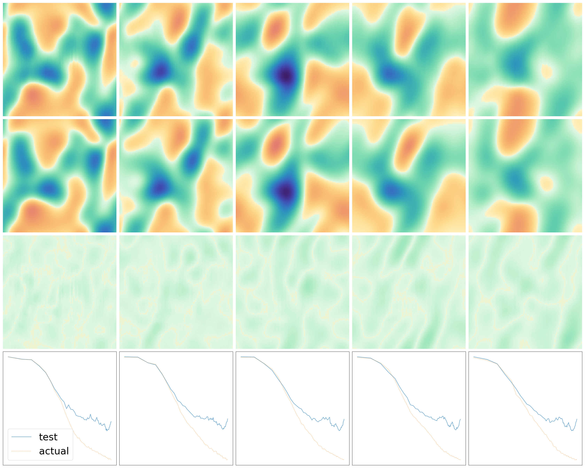
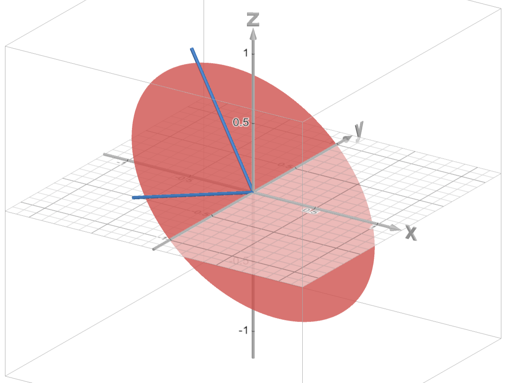
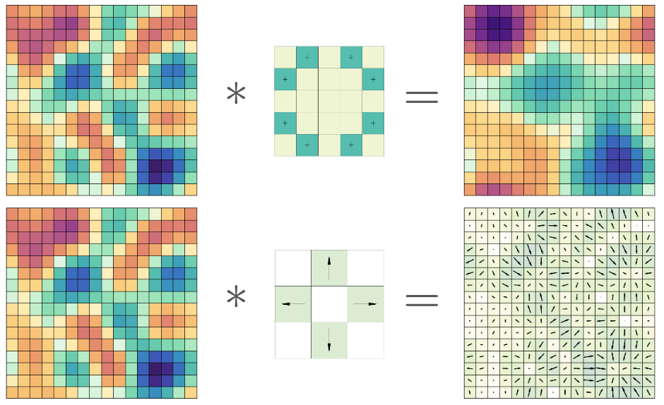
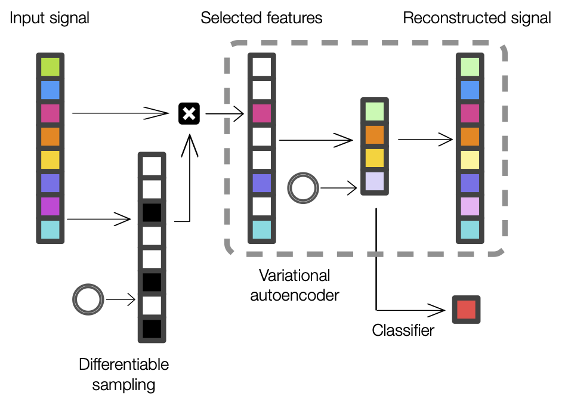

I am a fourth year PhD student at the Johns Hopkins University in the department of Applied Mathematics and Statistics. I am advised by Soledad Villar. Before coming to Johns Hopkins, I was a Senior Software Engineer at the foodservice startup Cut+Dry. Prior to that, I was in Troy, NY, getting a B.S. in Computer Science and Mathematics at Rensselaer Polytechnic Institute.
My research interests are in the mathematical underpinnings of data science and machine learning. In particular I am interested in incorporating symmetries into neural networks using equivariant machine learning.
Outside of work I enjoy playing volleyball, watching movies, and reading the news. You can find me at wgregor4 (at) jhu.edu, or in my office S430 in the Wyman Park Building.
Research

Rollout of a compressible Navier-Stokes simulation.
Robust emulator for compressible navier-stokes using equivariant geometric convolutions Wilson G. Gregory, David W. Hogg, Kaze W. K. Wong, Soledad Villar
Paper NeurIPS Machine Learning For the Physical Sciences Workshop https://ml4physicalsciences.github.io/2024/, 2024
Applying the GeometricImage-Net model to the problem of compressible Navier-Stokes. Won the workshop Best 'AI for Physics' Paper Award.

The sparse vector recovery problem.
Learning equivariant tensor functions with applications to sparse vector recovery Wilson G. Gregory, Josué Tonelli-Cueto, Nicholas F. Marshall, Andrew S. Lee, Soledad Villar
https://arxiv.org/abs/2406.01552 Preprint, 2024
A characterization of tensor polynomials that are equivariant to the orthogonal group, the indefinite orthogonal group, and the symplectic group. We use this characterization to solve the sparse vector recovery problem.

Scalar image convolved with scalar and vector filters
Equivariant geometric convolutions for emulation of dynamical systems Wilson G. Gregory, David W. Hogg, Ben Blum-Smith, Maria Teresa Arias, Kaze W. K. Wong, Soledad Villar
arxiv.org/abs/2305.12585 In Review, 2024
A model that extends convolutional neural networks to work with images of vectors and tensors. With a simple adjustment, the GI-Net can be made equivariant to changes of coordinates.

MarkerMap Architecture
MarkerMap: nonlinear marker selection for single-cell studies Wilson Gregory, Nabeel Sarwar, George Kevrekidis, Soledad Villar, Bianca Dumitrascu
npj Systems Biology and Applications Published, 2024
A generative model for selecting minimal gene sets which are maximally informative of cell type origin and enable whole transcriptome reconstruction.